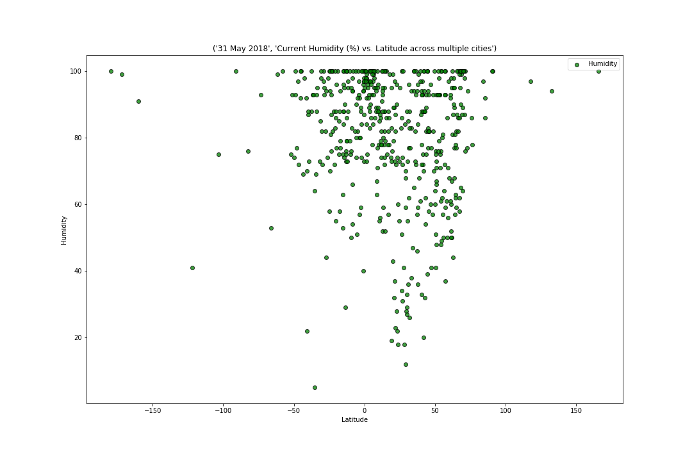

Toggle navigation
Home
Humidity

Humidity of cities are generally higher with less variance when latitudes come closer to the equator.
Conclusion: Since it is summer, the humidity is high for majority of the cities